Delay estimation
A frequent property of control systems is the presence of delays, either due to processing time, network latency, or other physical phenomena. Delays that occur internally in the system will in the discrete-time setting add a potentially large number of state variables to the system, $\tau / T_s$ state variables are required to represent a delay of $\tau$ seconds in a discrete-time system with sampling time $T_s$. A common special case is that the delay occurs at either the input or the output of the system, e.g, due to communication delays. Estimating this delay ahead of the estimation of the model is often beneficial, since it reduces the number of parameters that need to be estimated. Below, we generate a dataset with a large input delay $\tau$ and have a look at how we can estimate $\tau$.
Estimating the delay
The simulated experiments start at rest, and the data are noise-free unless stated otherwise.
using Plots, Random
using ControlSystemIdentification, ControlSystemsBase
Random.seed!(1)
τ = 2.0 # Delay in seconds
Ts = 0.1 # Sampling time
τ_samples = round(Int, τ / Ts) # Delay in samples
P = c2d(tf(1, [1, 0.5, 1])*delay(τ), Ts) # Dynamics is given by a simple second-order system with input delay
colored(N) = lsim(tf(1, [1, -0.9], Ts), randn(1, N))[1] # Random signal with most of its power at low frequencies
u = colored(600)
res = lsim(P, u)
d = iddata(res)
plot(d)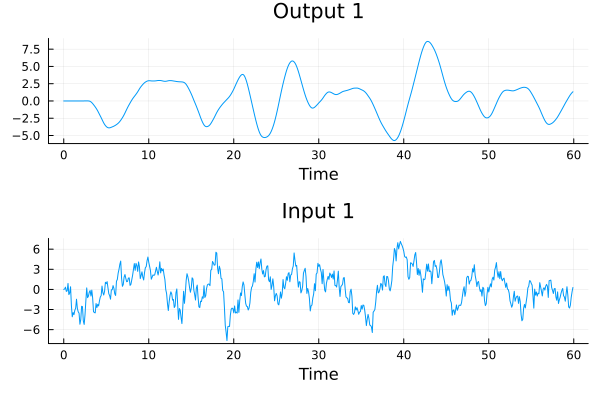
If we inspect the (discrete-time) system, we see that it indeed has a large-dimensional state:
P.nx22The delay convention
A discrete-time system that is strictly proper has at least a one-sample delay between the input and the output, the output at time $k$ cannot depend on the input at time $k$. The inputdelay keyword of, e.g., arx counts this sample: the default inputdelay = 1 is a system without any additional delay, inputdelay = 0 is a system with a direct term, and a strictly proper system with a relative degree of one and a pure delay of $n$ samples has inputdelay = n + 1 (in general, inputdelay = n + r for a relative degree $r$). The system P above has a pure delay of τ_samples samples, and thus corresponds to inputdelay = τ_samples + 1. We will use this convention throughout this page.
A simple, non-parametric way of figuring out whether or not there's a delay in the system is to look at the cross-correlation between the input and the output, we can do this using the crosscorplot function:
crosscorplot(d)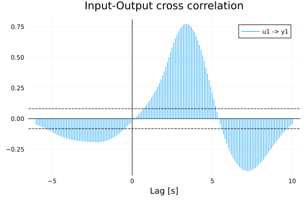
The dashed lines indicate the confidence interval within which the correlation is considered insignificant, but they are only valid if the input is white. The cross-correlation between the input and the output is the impulse response of the system convolved with the autocorrelation of the input. If the input is not white, as in this case, the autocorrelation of the input causes a correlation to appear also at lags that are shorter than the delay, and the plot above indicates a significant correlation at lags well below the true delay of two seconds.
To remedy this, we prewhiten the input: we estimate an autoregressive model ar of the input, and filter both the input and the output through the inverse of this model. Since the same linear filter is applied to both signals, the delay is unaffected, but the input is now approximately white and the confidence bounds are valid:
function prewhiten(d, na = 5)
Gar = ar(iddata(d.u, d.Ts), na) # Model of the input signal, Gar = 1/A
W = 1/Gar # Whitening filter A
iddata(lsim(W, d.y)[1], lsim(W, d.u)[1], d.Ts)
end
crosscorplot(prewhiten(d))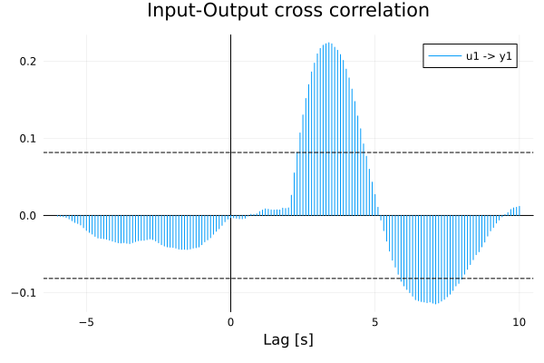
The prewhitened cross-correlation is insignificant for lags shorter than the delay, and starts to rise at a lag of two seconds plus one sample, in agreement with the convention above. The estimate obtained in this way is an approximation: the correlation exceeds the confidence interval some samples after the true delay since the impulse response of the system without delay starts at zero, and the dashed lines are valid for each lag individually, meaning that a few lags are expected to exceed them by chance in a long plot.
Another method to identify the delay would be to estimate the impulse response of the system:
impulseestplot(d, 60; λ=0.5, lab="Estimated", title="Impulse response of delay system")
plot!(impulse(P, 6), lab="True", framestyle=:zerolines)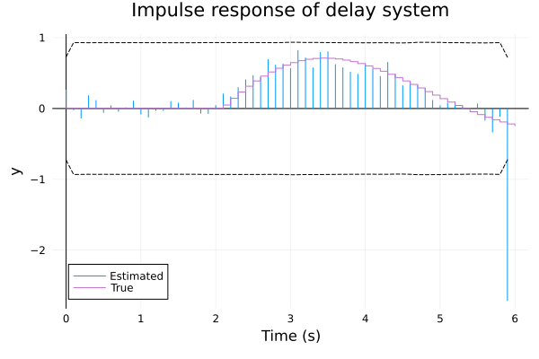
Estimation of impulse responses in the presence of such large delays is numerically challenging, and a regularization of $λ=0.5$ was required to achieve a reasonable result. If the delay is expected to be large and the dataset is small, the cross-correlation method may be preferable, since the regularization parameter $λ$ must be tuned, e.g., by evaluating the simulation fit of the estimated impulse response on a separate validation dataset, and the result depends on the excitation and the noise level. However, for short delays and large datasets, the impulse-response method works rather well. Below, we show the estimated impulse response for a much larger dataset just to demonstrate:
u2 = sin.(0.01 .* (0:Ts:300).^2) .+ randn.() # An interesting and long input signal with some noise as well
res2 = lsim(P, u2')
d2 = iddata(res2)
impulseestplot(d2, 200; λ=0.0, lab="Estimated", title="Impulse response with large dataset")
plot!(impulse(P, 20), lab="True", framestyle=:zerolines)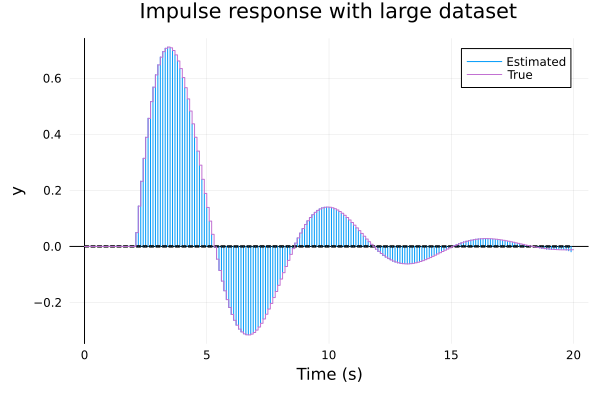
The impulse response is estimated by fitting a long FIR model, which has many parameters and is sensitive to noise. This can be mitigated by regularization with a parameter $λ$, which introduces a bias towards small impulse-response coefficients in exchange for a lower variance. The regularization parameter is not known beforehand, but it can be tuned using data: we estimate the impulse response for a number of values of $λ$ using one dataset, and evaluate the simulation fit of the corresponding FIR models on a second dataset obtained from a separate experiment. We add measurement noise to both datasets to make this realistic:
σ = 0.1 # Standard deviation of the measurement noise
noisy(N) = (u = colored(N); iddata(lsim(P, u)[1] .+ σ*randn(1, N), u, Ts))
dn, dval = noisy(200), noisy(200) # Estimation and validation data
n = 100 # Number of FIR coefficients
λs = exp10.(-4:0.5:3)
fits = map(λs) do λ
ir, _ = impulseest(dn, n; λ)
Gfir = tf(Ts .* ir, [1; zeros(n - 1)], Ts) # impulseest returns the impulse response divided by Ts
modelfit(dval.y, lsim(Gfir, dval.u)[1])[]
end
λbest = λs[argmax(fits)]
plot(
plot(λs, fits, xscale=:log10, xlabel="λ", ylabel="Validation fit [%]", m=:o, legend=false),
impulseestplot(dn, n; λ=λbest, lab="Estimated", title="Impulse response, λ = $(round(λbest, sigdigits=2))"),
size=(900, 300),
)
plot!(impulse(P, 10), lab="True", framestyle=:zerolines, sp=2)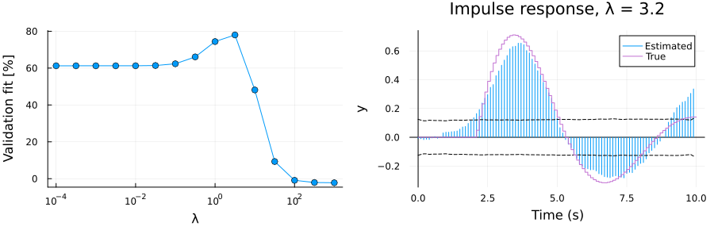
The dashed lines in the right plot indicate an approximate interval of two standard deviations of the estimate, which does not account for the bias introduced by the regularization. The validation curve shows how the choice of $λ$ is a trade-off between bias and variance: for small values the FIR model, which has about as many parameters as there are samples, adapts to the noise, and for large values the impulse response is suppressed. The best validation fit is obtained for an intermediate value. The number of coefficients n must be large enough to cover both the delay and the response of the system, and the result depends on the excitation, the number of samples and the noise level, and not only on the delay. If the dataset is small, the cross-correlation and the delay sweep below are less demanding alternatives.
A third method, arguably less elegant, is to use a model-selection method to figure out the delay. Presumably, models estimated with an order smaller than the delay will be rather poor, something that should be visible if we try models of many orders. Below, we use the function find_nanb that tries to identify the appropriate model order for an arx model. Information criteria such as AIC are not informative for noise-free data, since the prediction error vanishes for all models of sufficient order, we thus use the noisy dataset.
find_nanb(dn, 2:8, 10:30, xrotation=90, size=(800, 300), margin=5Plots.mm, xtickfont=6)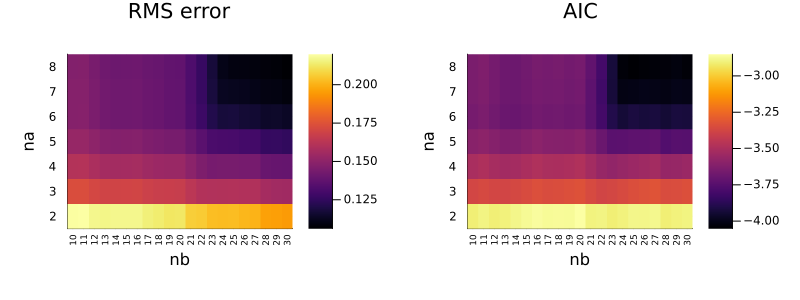
The prediction error tends to decrease once nb is large enough to cover the delay, which happens to be the number of delay samples $\tau / T_s$ + the number of numerator parameters for the system without delay:
c2d(tf(1, [1, 0.5, 1]), Ts)TransferFunction{Discrete{Float64}, ControlSystemsBase.SisoRational{Float64}}
0.004913614996952864z + 0.00483237472115039
-----------------------------------------------
1.0z^2 - 1.941483434782611z + 0.951229424500714
Sample Time: 0.1 (seconds)
Discrete-time transfer function modelThe criterion does not have a sharp minimum in this case, and models with a smaller nb and a dedicated inputdelay are more parsimonious, which is the approach of find_delay.
A fourth method is to estimate a low-order model for each of a number of candidate delays, and compare how well the models explain the validation data. The function find_delay fits an arx model with inputdelay = k for each candidate k and returns the one with the smallest simulation error on the validation data. The orders na and nb should be chosen to represent the system without delay, and nb should not be much larger than the number of numerator coefficients of that system, since a long B polynomial can compensate a too short delay on its own. The delay-free system above has two numerator coefficients, and two poles. Since arx is biased by output noise, we choose a slightly larger na for the noisy data:
sweep = find_delay(dn, 6, 4, 0:40; dval)DelaySweep: best inputdelay = 23 samples (2.3000000000000003 s), normalized RMS error 0.09543939599970701plot(sweep)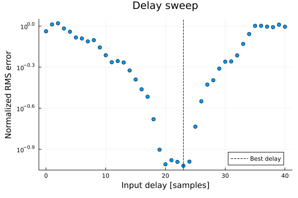
The simulation error has a distinct minimum, which is located at or near the true delay of τ_samples + 1 samples. Values of the loss larger than a fixed bound are clipped in the plot, e.g., those of unstable candidate models. The accuracy of the estimate decreases with the noise level, in particular if na is chosen too small, in which case the estimate is biased. The sweep is nevertheless a useful first step, since it reduces the problem to estimating the dynamics without a delay. For noise-free data, the true delay is recovered exactly:
sweep_noisefree = find_delay(d, 2, 2, 0:40; dval = iddata(lsim(P, colored(600))))DelaySweep: best inputdelay = 21 samples (2.1 s), normalized RMS error 4.409326376879678e-14Handling the delay when estimating a model
Once we know that there is a delay present, we need to somehow handle it while estimating a model. The naive way is to simply select a model with high-enough order and call it a day. However, this is prone to numerical problems and generally not recommended. Some methods have a dedicated inputdelay keyword that allows you to specify known input delays, after which the method handles it internally. For methods that do not have this option, one can always preprocess the data to remove the delay, we show how to do this next:
d_shifted = iddata(d.y[:, τ_samples+1:end], d.u[:, 1:end-τ_samples], d.Ts)
crosscorplot(prewhiten(d_shifted))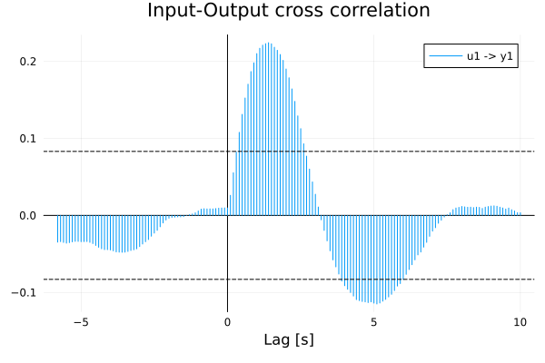
The (prewhitened) cross-correlation plot now indicates that the delay is gone. Please note, one sample delay is most of the time expected, indeed, it's unrealistic for the output of a physical system to respond at the same time as something happens at the input. Once we have estimated a model with the dataset with the delay removed, we must add the delay back into the estimated model, e.g.,
P̂ = subspaceid(d_shifted, focus=:simulation) # Estimate a model without delay
tf(d2c(P̂)) # Does it match the original continuous-time system without delay?TransferFunction{Continuous, ControlSystemsBase.SisoRational{Float64}}
1.0799929191901371e-15s^2 - 1.9580053458115356e-15s + 1.0000000000000016
------------------------------------------------------------------------
1.0s^2 + 0.49999999999999806s + 1.0
Continuous-time transfer function modelThe estimated model above should be very close to the system tf(1, [1, 0.5, 1]) (some small higher-order terms in the numerator are expected). To add the delay to this model, we do
P̂τ = P̂*delay(τ, Ts) # Note that this is different from delay(τ, Ts)*P̂ which adds output delay instead of input delay
bodeplot([P, P̂τ], lab=["True system" "" "Estimated system" ""])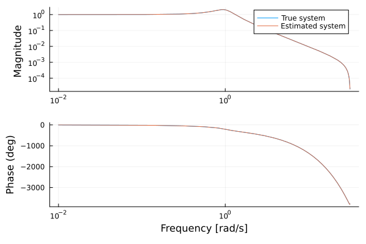
The estimated model should now match the true system very well, including the large drop in phase for higher frequencies due to the delay.
For a single-input single-output transfer function, P̂*delay(τ, Ts) and delay(τ, Ts)*P̂ are the same transfer function. They are, however, different state-space realizations with different state variables: the delay state variables are located before or after the dynamics, so the initial state of the model has a different interpretation, and the estimated state of a state estimator built on the model is different. For multiple-input systems, an input delay and an output delay are different systems.
If the system contains internal delays, it might appear in a cross-correlation plot as if the system has an input-output delay, but in this case shifting the data like we did above may be ill-advised. With internal delays, use the number of estimated delay samples as a lower bound on the model order instead. An example of an internal delay is when a control loop is closed around a delayed channel, illustrated below.
Internal delays
In discrete time, a one-sample delay on either the input or the output appear as a pole in the origin. However, when the delay is internal to the system, it's not as easy to detect. Below, we close the loop around the system $P$ from above using a PI controller $C$, and construct a new dataset where the input is the reference to the PI controller rather than the input to the plant.
C = pid(0.1, 0.5; Ts)
L = P*C
G = feedback(L)
plot(nyquistplot(L), plot(step(G, 50)))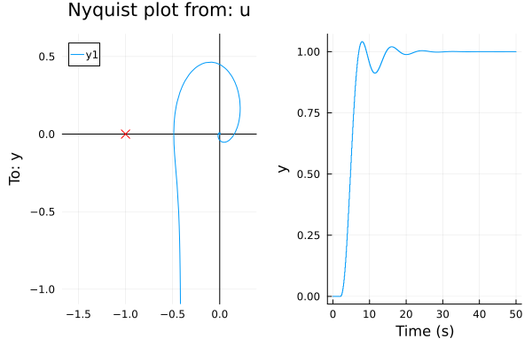
ref = colored(500) # Reference signal
res = lsim(G, ref)
dG = iddata(res)
plot(plot(dG), crosscorplot(prewhiten(dG)))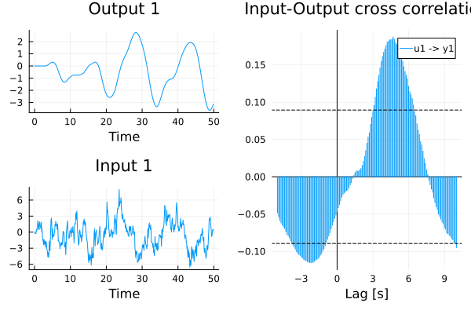
We see that the cross-correlation plot still indicates that it takes over 2 seconds for the output to be affected by the input, but if we look at the model-selection plot, we must include orders up to above 23 to get a good fit:
find_nanb(dG, 3:30, 5:30, xrotation=90, size=(800, 300), margin=5Plots.mm, xtickfont=6)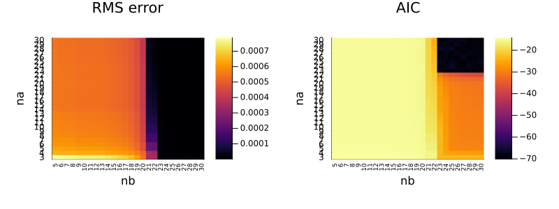
We can also inspect the pole-zero maps of the open-loop and closed-loop systems
plot(
pzmap(P, title="Open-loop system"),
pzmap(G, title="Closed-loop system"),
plot_title="Pole-zero maps",
layout=(1, 2),
ratio=:equal,
size=(800, 400),
xlims=(-1.1, 1.1),
ylims=(-1.1, 1.1),
)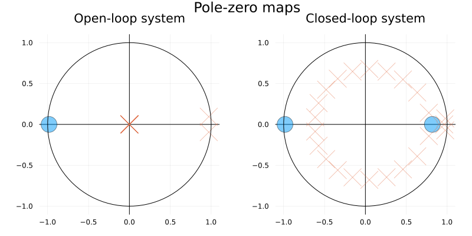
the presence of the feedback has moved all the delay poles away from the origin (there are multiple poles on top of each other in the left plot).
In this case, we must thus estimate a model of fairly high order (23) in order to accurately capture the dynamics of the system. If we do this, we can see that the estimated model matches the true system very well (since we didn't add any disturbance):
model = subspaceid(dG, G.nx)
simplot(model, dG, zeros(model.nx))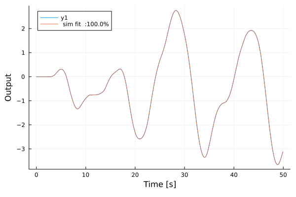
In a practical scenario, estimating a model of such high order may be difficult. It might then be worthwhile trying to estimate the lower-order open-loop system $P$ directly, taking care to properly handle the delay, which then appears on the input rather than internally.
If we use one of the methods that support the inputdelay keyword, we can see whether or not we can approximate the closed-loop system with a model that has an input delay only. We let the delay sweep select the delay, and compare the validation error to the error of the candidate models:
dGval = iddata(lsim(G, colored(500))) # Validation data from a separate experiment
sweepG = find_delay(dG, 4, 4, 0:40; dval = dGval)
plot(sweepG)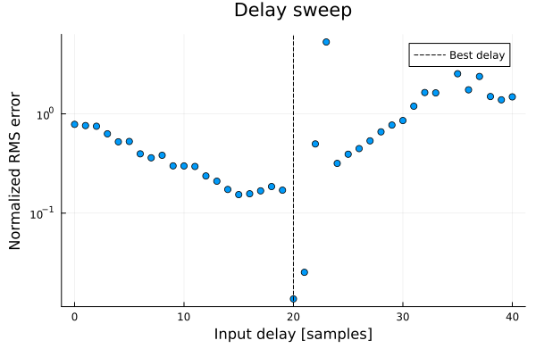
The simulation error on the validation data has a distinct minimum, and is small in absolute terms (the normalized RMS error is displayed in the figure), which indicates that the closed-loop system is well approximated by a model of low order with an input delay. Note that the selected delay does not have to equal the delay of the open-loop system exactly: the delayed channel is inside of the loop, and the estimated model is an approximation of the closed-loop system. We estimate a model with the selected delay:
model2 = arx(dG, 4, 4, inputdelay=sweepG.delay)
plot(
simplot(model2, dG),
pzmap(
model2,
ratio=:equal,
xlims=(-1.1, 1.1),
ylims=(-1.1, 1.1),
title="Estimated ARX model with input delay",
)
)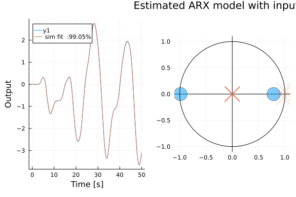
We see that with a model of order 4 (4 free parameters in the denominator) together with a specified input delay of sweepG.delay samples, we indeed get a good approximation of the closed-loop system.
If we compare the Bode plots of the true closed-loop system with the two identified models, they match very well.
bodeplot([G, model, model2])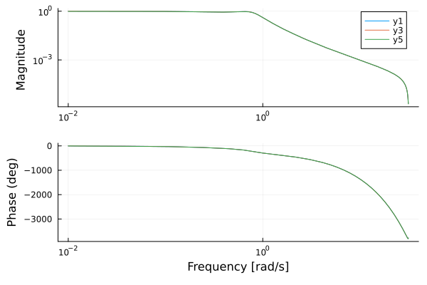
It may thus be possible to approximate a system with internal delays using a model that has an input delay only.
For completeness, we construct an example where this is not quite possible. The system in the example below can be thought of as an echo chamber, where the input passes through a resonant channel before it reaches the output. A fraction of the output, with a gain of 0.6 at low frequencies, is fed back at the input through the same channel (the echo), causing an interesting impulse response:
ref = sign.(sin.(0.02 .* (0:Ts:100).^2)) # An interesting reference signal
Pc = feedback(tf(100, [1, 10, 100]), -tf(60, [1, 10, 100])*delay(τ)) # Feed the output back at the input with a low-frequency gain of 0.6 and a delay of 2 seconds (like an echo)
Pd = c2d(Pc, Ts)
res = lsim(Pd, ref')
decho = iddata(res)
plot(bodeplot(Pd, lab=""), pzmap(Pd), plot(impulse(Pd, 10), title="Impulse response"), plot(decho))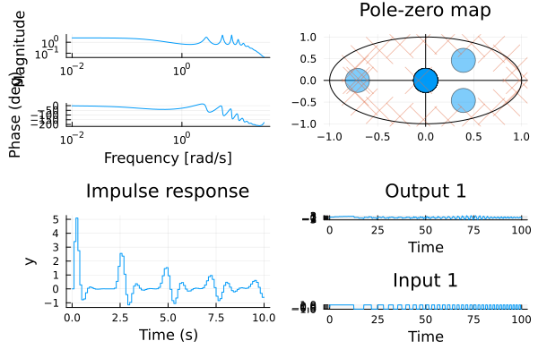
The model-selection plot below indicates that we need to reach model orders of 24 to get a good fit
find_nanb(decho, 3:30, 5:30, xrotation=90, size=(800, 300), margin=5Plots.mm, xtickfont=6)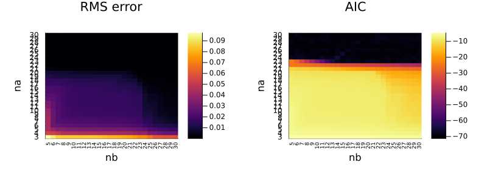
This time, the delay sweep does not find any delay for which a low-order model with an input delay fits the data well, in contrast to the previous example. Note that the candidate delays include zero: the forward path of this system does not contain any transport delay, the output starts to respond to the input after the minimum delay of the delay-free dynamics, and a model with a long input delay is thus not a suitable structure:
sweepE = find_delay(decho, 4, 4, 0:40)
plot(sweepE)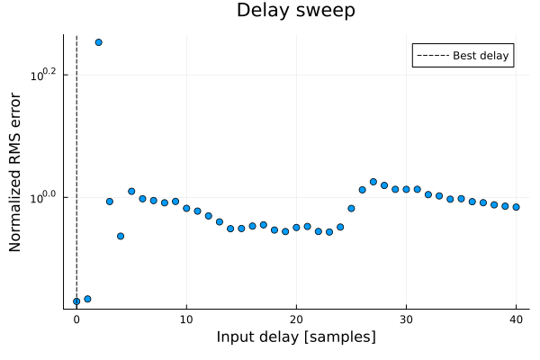
trying to estimate a 4:th order model with input delay of 21 samples does not work at all this time, but fitting a 24:th order model does, and fitting a 4:th order model using subspace identification with a long internal prediction horizon works reasonably well
model3 = arx(decho, 4, 4, inputdelay=τ_samples+1)
model4 = subspaceid(decho, 24)
model5 = subspaceid(decho, 4, r=50)
figsim = simplot(model3, decho, zeros(ss(model3).nx), sysname="ARX 4")
simplot!(model4, decho, zeros(model4.nx), ploty=false, plotu=false, sysname="Subspace 24")
simplot!(model5, decho, zeros(model5.nx), ploty=false, plotu=false, sysname="Subspace 4")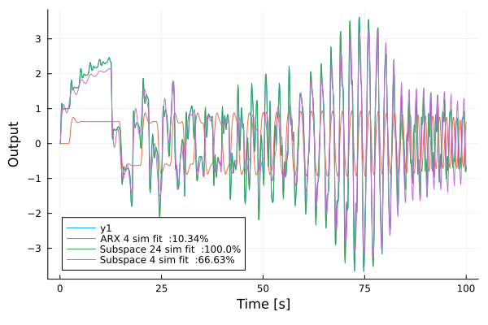
Keep in mind that we do not add any disturbance in our simulations here, and estimating 24:th order models is likely going to be a challenging task in practice.
Case study: influence of one-sample delay
The following example investigates the influence of an unexpected single sample delay in the estimation of a model for a double-mass system with the velocity of one of the masses as output. The system is available as one of the demo systems in ControlSystems.jl, and its frequency response looks like follows
P = DemoSystems.double_mass_model(outputs=2) |> minreal
bp = bodeplot(P, lab="Continuous-time system without delay", legend=:bottomleft)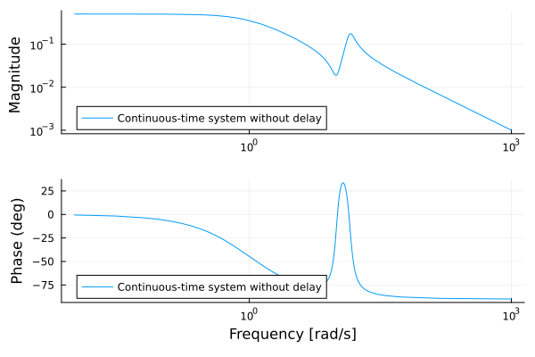
We now create a discrete-time equivalent to the system, with a one sample delay (0.01s)
Ts = 0.01
Pd = c2d(P*delay(Ts), Ts)
bodeplot!(bp, Pd, lab="Discrete-time system with delay")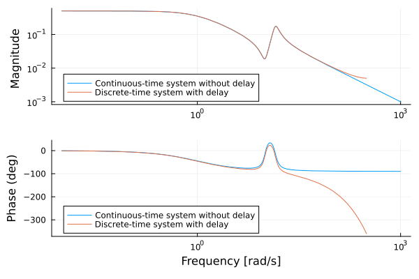
Not much changes in the Bode plot, except for at the very highest frequencies, which is exactly what we expect from a one-sample delay.
We now generate some dataset to use for identification
u = sign.(repeat(randn(100), inner=5))
res = lsim(Pd, u')
plot(res, plotu=true)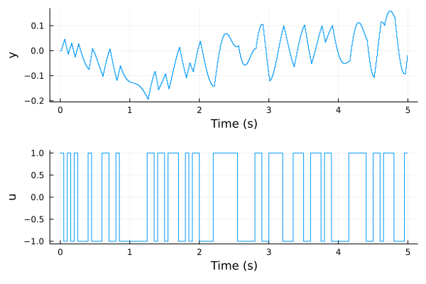
The first model we'll estimate is an ARX model, i.e., a discrete-time transfer function. The discrete-time order of the true system without delay is 3, so we estimate a third-order model without delay
d = iddata(res)
model_arx = arx(d, 3, 3)
bodeplot!(bp, model_arx, lab="ARX model")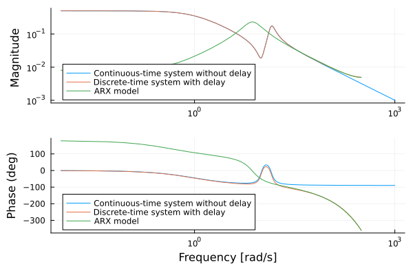
As we can see, the fit is terrible! The least-squares estimation that underpins the arx estimator tries to find a model that relates the last three outputs and inputs to the current output, but this is not possible due to the extra delay, in this case the result is catastrophic due to the "shortsightedness" of the arx function, it only looks at the immediate past and future, i.e., high-frequency properties.
If we specify that we have a delay (1 sample delay implies causality, 2 samples delay implies causality + one sample pure delay), we indeed get what we would expect:
model_arx_2 = arx(d, 3, 3, inputdelay=2)
bodeplot!(bp, model_arx_2, lab="ARX model with delay")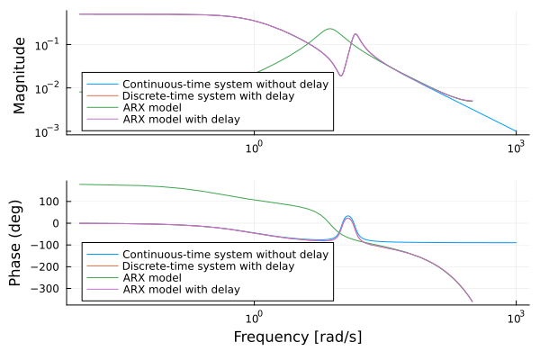
We can compare the models also in simulation, the model oblivious to the delay does no better here:
plot(res, lab="Data")
simplot!(model_arx, d, ploty=false, sysname="ARX model")
simplot!(model_arx_2, d, ploty=false, sysname="ARX model with delay")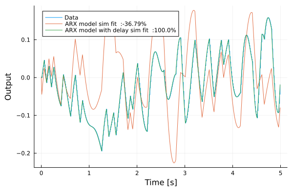
For comparison, we also estimate a model using subspace identification (subspaceid), which uses an internal prediction horizon that is much longer than the arx method. We compare two cases, one where we explicitly tell subspaceid to focus on simulation, and one where the focus is on shorter-term prediction
model_sim = subspaceid(d, 3, focus=:simulation)
model_pred = subspaceid(d, 3, focus=:prediction)
bodeplot(P, lab="Continuous-time system without delay")
bodeplot!(model_sim, lab="Simulation model")
bodeplot!(model_pred, lab="Prediction model", legend=:bottomleft)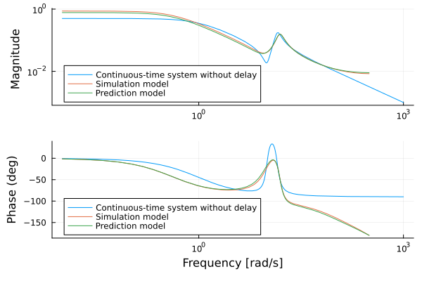
We see that although the result is not perfect, we do have one state variable too few after all, the fit is much better. This also carries over to the time domain:
plot(res, lab="Data")
simplot!(model_sim, d, ploty=false, sysname="Simulation model")
simplot!(model_pred, d, ploty=false, sysname="Prediction model")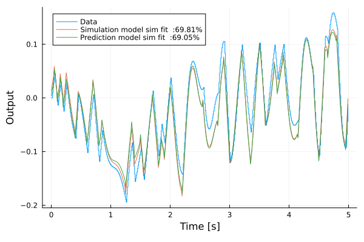
Try increasing the internal prediction horizon of the subspaceid method by setting r = 30 and you'll get an even better fit.
What's the takeaway here? When fitting linear black-box models like we did here, we can simply handle the delay by increasing the model order by one for each sample of delay. However, if we are fitting parametric models from first principles and using "short-sighted" methods, we must explicitly take care of the delay in order to not suffer from poor fit. A short-sighted method is any method that tries to fit either local differences (like ARX), or that tries to fit derivatives (the finite-difference approximation to a derivative is a difference).